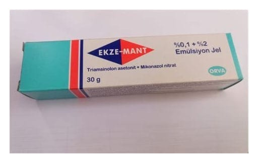

Ekze-Mant %0,1 + %2 Emülsiyon Jel 30 g

Ne için kullanılır
KT · Bölüm 1 EKZE-MANT, deri üzerine sürülerek kullanılan bir üründür. Mikonazol kombinasyonları olarak adlandırılan bir ilaç grubuna dahildir. Bu ilacı kullanmaya başlamadan önce bu KULLANMA TALİMATINI dikkatlice okuyunuz, çünkü sizin için önemli bilgiler içermektedir.
Bu kullanma talimatını saklayınız. Daha sonra tekrar okumaya ihtiyaç duyabilirsiniz. Eğer ilave sorularınız olursa, lütfen doktorunuza veya eczacınıza danışınız. Bu ilaç kişisel olarak sizin için reçete edilmiştir, başkalarına vermeyiniz. Bu ilacın kullanımı sırasında, doktora veya hastaneye gittiğinizde doktorunuza bu ilacı kullandığınızı söyleyiniz. Bu talimatta yazanlara aynen uyunuz. İlaç hakkında size önerilen dozun dışında yüksek veya düşük doz kullanmayınız.
EKZE-MANT, etkin madde olarak 100 gramında 2 g mikonazol nitrat ve 0,1 g triamsinolon asetonit içermektedir. Mikonazol nitrat mantarlara karşı etkili olan bir maddedir. Triamsinolon asetonit ise iltihap, kaşıntı giderici ve antialerjik özelliklere sahiptir. EKZE-MANT, ağzı plastik kapakla kapatılmış, 30 g ürün içeren alüminyum tüpte kullanıma sunulmaktadır. EKZE-MANT, deride egzama (çeşitli etkenlerin neden olduğu yer yer kabuklaşma gösteren içi sıvı dolu kabarcıklar oluşması ve çoğu kez akıntı ile belirgin kaşıntılı deri yanıtı) ile birlikte görülen mantar hastalıklarının tedavisinde kullanılır.